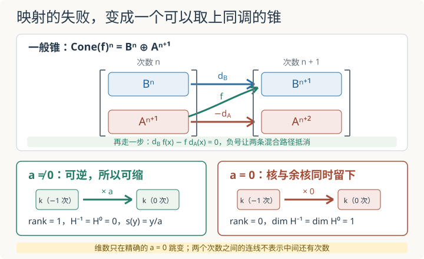

本页目录
基础衔接 12 · 映射锥：把一个映射的失败装进复形
先修：链复形：先区分闭合与边界。本讲统一使用上链约定：微分 \(d^n:C^n\to C^{n+1}\) 提高次数。目标是分清三件常被混在一起的事：链映射诱导同调映射、链同伦忽略可收缩的往返、拟同构只要求同调上可逆。我们不会在这里完整构造导出范畴。
两个复形同调相同，是否一定能逐项互相还原？
1. 先看真正的问题：地图可能看起来不同，却留下同样的洞
上一讲把一个复形压缩成上同调
现在给两个上链复形 \(A^\bullet,B^\bullet\) 和一族同次数线性映射 \(f^n:A^n\to B^n\)。仅有逐项映射还不够；它必须与微分交换：
这样的 \(f\) 才叫上链映射。若 \(x\) 是闭元，即 \(d_Ax=0\)，那么 \(d_Bf(x)=f(d_Ax)=0\)；若 \(x=d_Ay\) 是边界，那么 \(f(x)=d_Bf(y)\) 仍是边界。因此 \(f\) 诱导
若每个 \(H^n(f)\) 都是同构，就称 \(f\) 为拟同构。注意定义只承诺“所有洞的信息相同”，并没有承诺每个 \(f^n\) 可逆，也没有自动给出一个反向链映射。
2. 链同伦：把一次“先走微分再退回”的误差视为可消去
设 \(f,g:A^\bullet\to B^\bullet\) 都是上链映射。一条从 \(f\) 到 \(g\) 的上链同伦是一族降一次数的映射
满足
也就是逐次写成
为何这类误差不会改变上同调？若 \(d_Ax=0\)，则
它在 \(B\) 中只是一个边界。因此链同伦的映射诱导相同的上同调映射。
若存在链映射 \(u:B^\bullet\to A^\bullet\)，使
就称 \(f\) 为链同伦等价。它必然是拟同构，因为 \(H(u)H(f)\) 与 \(H(f)H(u)\) 都是恒等映射。反过来在一般系数环上并不成立，第 7 节会给出一个无法逃避的整数反例。
3. 第一个完整收缩：非零项不等于非零信息
取域 \(k\) 上的两项上链复形
其他次数为零。它的上同调全为零，但两个链群都非零。更强的是，它可以收缩到零：令
其余 \(h^n=0\)。在次数 \(0\)，有 \(h^1d^0=\operatorname{id}_{C^0}\)；在次数 \(1\)，有 \(d^0h^1=\operatorname{id}_{C^1}\)。所以
即 \(\operatorname{id}_C\simeq0\)。称这样的复形为可缩复形。可缩一定推出上同调全零，因为恒等映射与零映射在上同调上相同；但“上同调全零是否一定可缩”取决于系数环境，不能在所有环上直接反推。
4. 主模型：标量映射的锥把可逆性变成一次秩跳变
令 \(A=B=k[0]\)，即两个复形都只在次数 \(0\) 放一个域 \(k\)。取
它的映射锥在本例中就是
因此
若 \(a\ne0\)，域中的非零数可逆，微分的秩为 \(1\)，两个上同调都为零。此时还能写出显式收缩：
其余 \(s^n=0\)。对次数 \(-1\) 的 \(x\)，\(s^0d^{-1}(x)=x\)；对次数 \(0\) 的 \(y\)，\(d^{-1}s^0(y)=y\)，所以
若 \(a=0\)，微分秩为 \(0\)，于是
这时 \(1/a\) 根本不存在，锥也不可能可缩。若它可缩，恒等映射会在非零上同调上同时等于恒等与零，矛盾。

5. 一般映射锥：负号不是装饰，而是让两条路径抵消
对任意上链映射 \(f:A^\bullet\to B^\bullet\)，定义
这里 \(x\in A^{n+1}\)，所以第一分量中的 \(f\) 实际是 \(f^{n+1}\)。把微分再做一次：
第一分量为零用到了链映射条件 \(d_Bf=fd_A\)；第二分量为零用到了 \(d_A^2=0\)。若把第二分量草率写成 \(+d_Ax\)，第一分量一般会变成
不再自动为零。其他教材可以把符号移到等价的约定里，但同一套约定内部必须协调。
更概念化地，移位复形 \(A[1]\) 定义为
于是映射锥进入逐项分裂的短正合列
负号正是让最后的投影成为链映射所需要的移位符号。
6. 为什么锥恰好检测拟同构
上面的短正合列给出标准长正合上同调列。把指标排到能看见 \(f\) 的位置：
这立刻给出判据
理由可以逐项读出。若 \(H^n(f)\) 对所有 \(n\) 都是同构，正合性迫使夹在相邻同构之间的 \(H^n(\operatorname{Cone}(f))\) 为零。反过来，若所有锥上同调都为零，那么正合列同时给出 \(H^n(f)\) 的单射性与满射性。
因此三种强度应按下面的方向记忆：
映射锥上同调全零只说明最后一层。若还知道锥可缩，才对应更强的链同伦等价。下一节说明“全零”和“可缩”为什么不能随意互换。
7. 整数反例：拟同构没有链同伦逆
固定整数 \(n\ge2\)。取自由两项复形
以及只在次数 \(0\) 非零的复形
定义链映射 \(q:P^\bullet\to M^\bullet\)：次数 \(0\) 取模 \(n\)，次数 \(-1\) 取零。它确实与微分相容，因为 \(q^0(nx)=0\)。又有
所以 \(q\) 是拟同构。
现在假设它有链同伦逆 \(s:M^\bullet\to P^\bullet\)。次数 \(0\) 的分量必须是群同态
但这样的同态只能是零：若 \(z=s^0([1])\)，则 \(nz=s^0([n])=s^0(0)=0\)；而 \(\mathbb Z\) 没有非零挠元，所以 \(z=0\)。因此 \(s=0\)，从而 \(qs=0\)。
另一方面，\(M\) 只在次数 \(0\) 非零且微分为零，任意同伦算子都无处可去，所以 \(M\to M\) 的两个链映射同伦当且仅当它们严格相等。于是
矛盾说明 \(q\) 没有链同伦逆。它在上同调上完全正确，却不能在链复形层面逐项倒过来。导出范畴的一个核心动作正是形式地把这类拟同构变成可逆箭头；本讲到此为止，不把这个口号冒充为完整构造。
8. 为什么有限维向量空间看起来更友好
若 \(C^\bullet\) 是域 \(k\) 上的有界无环复形，每个子空间都能选补空间。记
并选 \(C^n=B^n\oplus L^n\)。微分限制为同构
在 \(B^{n+1}\) 上用这个同构的逆定义降次映射，在 \(L^{n+1}\) 上令它为零，就得到 \(ds+sd=\operatorname{id}_C\)。因此域上的有界无环复形可缩。
这也意味着：域上的有界复形之间，拟同构的锥是有界无环复形，因而可缩；标准锥判据进一步给出该拟同构是链同伦等价。整数反例没有矛盾，因为 \(\mathbb Z/n\) 在 \(\mathbb Z\)-模中不能像向量子空间那样总能找到线性补空间。不要把“向量空间可分裂”的舒适经验无条件搬到一般环的模上。
先预测，再拖动：实验固定 \(k=\mathbb R\)，滑块控制 \(a\in[-2,2]\)，步长 \(0.25\)，默认 \(a=1\)。页面应实时显示两项微分 \(\mathbb R\xrightarrow{\times a}\mathbb R\)、微分秩、\(\dim H^{-1}\)、\(\dim H^0\)，以及收缩公式 \(s(y)=y/a\) 是否存在。
完整静态后备：
| \(a\) | \(\operatorname{rank}(\times a)\) | \(\dim H^{-1}\) | \(\dim H^0\) | 可缩？ |
|---|---|---|---|---|
| \(-2\) | 1 | 0 | 0 | 是，\(s(y)=-y/2\) |
| \(-0.25\) | 1 | 0 | 0 | 是，\(s(y)=-4y\) |
| \(0\) | 0 | 1 | 1 | 否，\(1/a\) 不存在 |
| \(0.25\) | 1 | 0 | 0 | 是，\(s(y)=4y\) |
| \(1\)（默认） | 1 | 0 | 0 | 是，\(s(y)=y\) |
| \(2\) | 1 | 0 | 0 | 是，\(s(y)=y/2\) |
图表横轴是两个离散次数 \(-1,0\)，不是参数 \(a\)；它显示当前 \(a\) 下两处上同调的维数。连接这两个点的线只帮助眼睛比较，既不创造“分数次数”，也不表示中间还有连续取值。拖动滑块时，秩与维数在每个非零 \(a\) 处保持不变，只在精确的 \(a=0\) 跳变；不能把这种跳变误读成 \(a\) 接近零时维数连续增大。
9. 两道迁移题
题一。 对任意上链复形 \(A^\bullet\)，证明 \(\operatorname{Cone}(\operatorname{id}_A)\) 可缩。请给出收缩，而不只说它的上同调为零。
把锥的两个分量交换到正确次数
这里
定义
则
而
相加得到 \((ds+sd)(b,x)=(b,x)\)。因此 \(s\) 是显式收缩。这也直接展示了锥微分中负号如何参与抵消。
题二。 把 \(f:\mathbb Z[0]\to\mathbb Z[0]\) 取为乘 \(6\)。计算映射锥的上同调。再把整个复形与 \(\mathbb Q\) 张量，结论怎样变化？能否由有理数上的结果反推整数上的锥可缩？
分别检查核、余核与系数变化
整数上的锥是
放在次数 \(-1,0\)。乘 \(6\) 在 \(\mathbb Z\) 上单射，所以 \(H^{-1}=0\)；其像为 \(6\mathbb Z\)，余核为 \(\mathbb Z/6\mathbb Z\)，故
因此该锥既不无环也不可缩，\(f\) 不是拟同构。与 \(\mathbb Q\) 张量后得到 \(\mathbb Q\xrightarrow{\times6}\mathbb Q\)，乘 \(6\) 可逆，锥可用 \(s(y)=y/6\) 收缩。不能反推原整数复形可缩：换系数会抹掉 \(\mathbb Z/6\) 挠信息。有理化后看不见的东西，在整数上仍可能真实存在。
速查与资料
| 概念 | 要求 | 保证 |
|---|---|---|
| 上链映射 | \(d_Bf=fd_A\) | 诱导上同调映射 |
| 上链同伦 | \(f-g=d_Bh+hd_A\)，\(h\) 降一次数 | \(H(f)=H(g)\) |
| 链同伦等价 | 有反向链映射，复合分别同伦于恒等 | 一定是拟同构 |
| 拟同构 | 每个 \(H^n(f)\) 都是同构 | 锥无环，但一般未必可缩 |
| 映射锥 | \(B^n\oplus A^{n+1}\)，微分含 \(-d_A\) | 把映射的核余核型失败组织成一个复形 |
复形的定义见 Stacks Project：Complexes，上链同伦、移位与符号约定见 Homotopy and the shift functor，映射锥的短正合列见 Cones and distinguished triangles。锥与拟同构的关系由其长正合上同调列给出，可对照 Derived categories。资料核查：2026-09-08。
路线验收：连续作业：从整数分解到导出观点。先独立提交中间计算，再用题解定位需要回补的步骤。